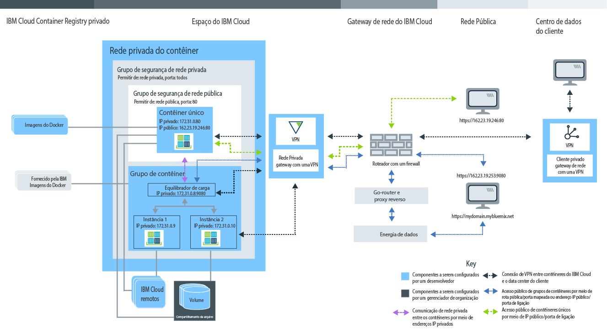

Planejando usar o contêineres únicos e escaláveis
• Gerencie a sua organização do Bluemix
para contêineres únicos e grupos de contêineres escaláveis
• Configure um espaço de nomes para o seu
registro privado do Bluemix
• Cota e tipos de conta do Bluemix
disponíveis
• Configuração de armazenamento persistente
• Crie contêineres únicos e grupos de contêineres escaláveis no IBM Bluemix Container Service
• GUI, CLI ou API de REST do Bluemix
• Imagens públicas da IBM, do Docker Hub e privadas
• Configurações de rede de contêiner privado
• Configurações de rede pública
• Integração de serviços do Bluemix
• Opções de armazenamento de dados persistentes
• Tipos de contêiner
• Opções de monitoramento e de criação de log
Entendendo as funções de usuário
Contêineres são gerenciados por gerenciadores de organização e desenvolvedores de contêiner. A imagem a seguir mostra uma configuração de contêiner de amostra de uma organização e destaca os componentes que podem ser configurados pelo gerente da organização ou pelo desenvolvedor de contêiner. 
Revise as subseções neste tópico para encontrar informações sobre cada componente, a decisão e as configurações que podem ser feitas. Algumas dessas configurações não podem ser mudadas depois que um contêiner é criado. Conhecer essas configurações com antecedência pode ajudar você a garantir que todos os recursos, como memória, espaço em disco e endereços IP, estejam disponíveis à equipe de desenvolvimento, bem como maximizar o uso da cota da organização.Gerenciar a organização do Bluemix para o IBM Bluemix Container Service
No Bluemix, é possível usar organizações para permitir a colaboração entre os membros da equipe e para facilitar o agrupamento lógico de recursos em nuvem em um projeto. A cada organização é designado um gerenciador de organização que é responsável por configurar os ambientes de desenvolvimento (espaços) e conceder aos membros da equipe acesso aos recursos em nuvem que são necessários para criar contêineres com sucesso para seus apps. Essa configuração inclui a designação de endereços IP públicos, armazenamento de dados e memória do contêiner. Como um gerenciador de organização, você também pode visualizar a cota e o uso atuais de recursos em nuvem e ajustá-los conforme necessário.
- Designe gerenciadores de organização fornecendo a um usuário a função de gerenciador dentro da organização.
- Designe criadores de contêiner fornecendo ao usuário uma função de desenvolvedor ou auditor dentro do espaço.
Configurando o espaço de nomes da sua organização para o seu registro privado do Bluemix
Para armazenar e gerenciar imagens privadas para o IBM Bluemix Container Service, toda organização precisa configurar seu próprio registro de imagens privadas do Docker no Bluemix. Esse nome do registro privado chama-se namespace e deve ser exclusivo no Bluemix.
Considere as regras a seguir quando escolher um namespace para sua organização.
- O namespace deve ser exclusivo no Bluemix.
- O namespace pode ter de 4 a 30 caracteres.
- O namespace deve iniciar com pelo menos uma letra ou um número.
- O namespace pode conter somente letras minúsculas, números ou sublinhados (_).
Na GUI do Bluemix, siga estas etapas.
Na CLI, execute o comando a seguir depois de efetuar login no IBM Bluemix Container Service:
Recuperando o namespace para sua organização
Se já houver um namespace configurado para sua organização, será possível recuperá-lo da GUI do Bluemix ou da CLI.
Na GUI do Bluemix, siga estas etapas.
Na CLI, efetue login no serviço IBM Bluemix Container Service e execute o comando a seguir.
Cota e contas do Bluemix
Cada organização no Bluemix possui um valor pré-configurado para a memória do contêiner, endereços IP públicos, compartilhamentos de arquivos e o número de serviços que são compartilhados entre todos os espaços de uma organização. Esses valores pré-configurados são chamados cota.
Tipos de conta do Bluemix
| Tipo de conta | Descrição |
|---|---|
| Avaliação grátis | Avaliações grátis para o contêineres únicos e escaláveis não estão disponíveis. Saiba mais sobre gerenciamento de cluster e migração para o Kubernetes no IBM Bluemix Container Service no Bluemix Public. |
| Pagamento por uso | Se você se inscrever para uma conta de Pagamento por uso, pagará somente pelos recursos do Bluemix que usar. |
| Subscrição | Se você se inscrever para uma conta de Assinatura, se comprometerá a gastar uma quantia mínima todo mês e receberá um desconto na assinatura que será aplicado a esse encargo mínimo. Você também paga por qualquer uso que exceda a quantia mínima de gasto. |
| Bluemix Dedicated | Com o Bluemix Dedicated, deve-se inscrever para um prazo de um ano, no mínimo. O que é pago todos os meses durante esse prazo baseia-se nos serviços dedicados desejados, além de uma conta de assinatura que fornece acesso a todos os serviços públicos. |
| Bluemix Local | Com o Bluemix Local, você deve se inscrever para um prazo mínimo de um ano. O que é pago todos os meses durante esse prazo é baseado nos serviços dedicados desejados, além de uma conta de assinatura que fornece acesso a todos os serviços públicos. |
Cota padrão para contas pagas
| Recurso | Limites de cota para contas pagas |
|---|---|
| Endereço IP público | 64 |
| Memória do contêiner | 64 GB Nota: Todo contêiner em seu espaço contribui para o uso da cota, esteja o
contêiner em execução ou não. Para liberar memória, deve-se remover os contêineres não usados.
|
| Compartilhamentos de Arquivos | 10 compartilhamentos de arquivo |
| Contêineres e grupos de contêineres | número ilimitado Nota: O tamanho de seu contêiner e grupos de contêineres é considerado para o
limite de memória do contêiner, mas você não está limitado a um número específico de contêineres.
|
| Imagens | 25 Nota: As imagens da IBM não são consideradas para seu limite de imagem no registro privado do Bluemix.
|
| Espaços | número ilimitado Nota: Todo espaço requer pelo menos 2 endereços IP públicos e 2 GB de memória de
contêiner que serão alocados automaticamente quando você efetuar
login em um novo espaço e tentar utilizá-lo com o IBM
Bluemix Container Service. Esses recursos são considerados
para sua cota, mas você não está limitado a um número específico de espaços.
|
Alocando cota para um espaço
- Nos detalhes de sua conta, em Gerenciar organizações, selecione uma organização.
- Na seção de cota, visualize os detalhes para contêineres.
- Na tabela Alocação de cota, mude a cota alocada por espaço clicando no botão Editar.
- Salve suas mudanças clicando no botão Salvar.
Dicas para maximizar o uso de sua cota
- Certifique-se de remover contêineres que não estão em uso para que suas configurações não sejam contadas para sua cota. Para obter mais informações, consulte Removendo contêineres únicos, Removendo grupos de contêineres e Remover um app de múltiplos contêineres.
- Não ligue um endereço IP público ao seu contêiner quando ele não precisar ficar acessível na Internet.
- Para reduzir o uso de endereço IP público, considere usar grupos de contêineres no lugar de um contêiner único. Os grupos de contêineres usam uma rota para acesso público que não está sujeito à cota de endereço IP. Para obter mais informações, consulte Executando serviços de longo prazo como grupos de contêineres a partir da GUI do Bluemix.
Armazenamento de dados persistentes
O gerenciador de organização pode criar compartilhamentos de arquivo com tamanho de armazenamento e IOPS específicos para atender às necessidades de armazenamento do espaço. Os compartilhamentos de arquivo podem ser provisionados em tamanhos de 20 GB para 12 TB e em IOPS por GB de 0,25, 2 ou 4. O tamanho do compartilhamento de arquivo em relação ao número de IOPS afeta a velocidade com que os dados podem ser lidos e gravados no volume do contêiner e a partir dele.
Criando seus contêineres com o IBM Bluemix Container Service no Bluemix
Para criar contêineres que executam seu app com o IBM Bluemix Container Service no Bluemix, deve-se ter recebido direitos de desenvolvedor para um espaço de organização. Como um desenvolvedor de apps, é importante saber como os componentes do contêiner estão relacionados e como é possível mudar a configuração de um contêiner para atender aos requisitos funcionais e não funcionais de seu app.
GUI do Bluemix, linha de comandos e API REST
Quando você estiver planejando trabalhar com o IBM Bluemix Container Service, será possível usar a GUI do Bluemix, instalar a interface da linha de comandos (CLI) ou enviar solicitações de HTTP com relação à API de REST para acessar o IBM Bluemix Container Service.
A GUI do Bluemix e a CLI podem ser usadas para concluir a maioria das tarefas no IBM Bluemix Container Service. No entanto, há tarefas que podem ser executadas somente pela GUI Bluemix ou pela CLI. Sendo assim, esteja preparado para usar ambos para gerenciar seus contêineres.
Se você não quiser usar a GUI do Bluemix nem a CLI, poderá enviar solicitações de HTTP diretamente para o servidor IBM Bluemix Container Service API para gerenciar seus contêineres com REST.
A tabela a seguir mostra todas as tarefas relacionadas ao contêiner que também requerem a GUI do Bluemix GUI, a CLI do IBM Bluemix Container Service CLI ou a API REST. As tarefas não listadas aqui podem ser executadas por todos os métodos.| Tarefas | interface gráfica com o usuário | CLI | API do |
|---|---|---|---|
| Revisar vulnerabilidades da imagem |  |
||
| Enviar por push imagens ao registro | |
|
|
| Puxar imagens do registro | |
||
| Copiar imagens do Docker Hub | |
||
| Alterar alocação de cota | |
||
| Recuperar cota específica da organização e do espaço | |
||
| Visualizar informações de log detalhadas | |
||
| Especificar mais logs | |
||
| Customizar logs | |
||
| Efetuar login no contêiner em execução. | |
||
| Usar o Docker Compose | |
||
| Listar volumes de um espaço | |
|
|
| Gravar arquivos em um volume | |
||
| Excluir um volume | |
|
|
| Recuperar mensagens do sistema | |
Instalando a CLI
Instale e configure a CLI do IBM Bluemix Container Service para gerenciar seus contêineres a partir da CLI.
Gerenciando contêineres por meio da API REST
Use a API do IBM Bluemix Container Service para trabalhar com seus contêineres únicos e grupos de contêineres usando REST.
Imagens públicas da IBM, do Docker Hub e privadas
Uma imagem de contêiner é a base para cada contêiner criado. Uma imagem é criada a partir de um Dockerfile, que é um arquivo que contém instruções para construir a imagem e construir artefatos, como um app, a configuração do app e suas dependências. Pense em uma imagem de contêiner como um arquivo executável (.exe ou .bin). Assim que você executa o arquivo de app executável, você cria uma instância de seu app. Ao executar um contêiner, você cria uma instância de contêiner da imagem. As imagens do contêiner são armazenadas no registro privado do Bluemix e podem ser incluídas somente por meio da CLI. Cada imagem de contêiner que você deseja usar deve estar em um registro antes que seja possível criar um contêiner a partir dela.
- Imagens públicas da IBM
- Comece com uma das imagens públicas da IBM que são fornecidas pelo IBM Bluemix Container Service, como as imagens do IBM Liberty e IBM Node, para testar os recursos do IBM Bluemix Container Service. Em seguida, é possível usar uma dessas imagens como imagem pai para modificar o Dockerfile e construir sua própria imagem com seu próprio código de app.
- Imagens do Hub
- Copie imagens diretamente do Docker Hub para seu registro privado do Bluemix ou puxe uma imagem do Docker Hub, modifique-a localmente e, em seguida, construa-a diretamente em seu registro.
- Crie sua própria imagem
- Se você tiver imagens de contêiner que já usa no ambiente local do Docker, será possível enviá-las por push para seu registro privado do Bluemix para utilizá-las no IBM Bluemix Container Service. Também é possível criar seu próprio Dockerfile, construir, testá-lo localmente e, em seguida, enviá-lo por push para seu registro de imagens privadas.
Visualizando as imagens no registro de imagens privadas
É possível visualizar todas as imagens do contêiner que estão disponíveis nas imagens privadas do Bluemix usando a GUI do Bluemix ou a CLI.
- Na GUI do Bluemix, selecione o catálogo e, em seguida, Contêineres. É possível ser as imagens que são fornecidas pela IBM e as que você enviou por push anteriormente para seu registro privado do Bluemix.
- Na CLI, execute bx ic images.
Revisando vulnerabilidades da imagem
Ao incluir imagens no registro privado do Bluemix, elas são varridas automaticamente pelo Vulnerability Advisor com relação às políticas padrão configuradas pelo gerenciador de organização e a um banco de dados de problemas conhecidos do Ubuntu. O Vulnerability Advisor verifica pacotes de inventário, configurações, portas abertas e metadados do Docker. Quando a varredura estiver concluída, você poderá revisar uma lista de possíveis vulnerabilidades e o endereço delas conforme necessário antes de usar a imagem em um contêiner. Dependendo das políticas configuradas pelo gerenciador de organização, a implementação de um contêiner a partir dessa imagem pode ser bloqueada ou um aviso é mostrado para o usuário.
- Para listar as vulnerabilidades de imagem, veja Revisando um relatório de imagem.
- Para configurar políticas customizadas em sua organização, veja Revisando políticas organizacionais.
Dicas do Dockerfile para evitar que um contêiner seja encerrado
O IBM Bluemix Container Service oferece muitos recursos para manter os contêineres seguros e gerenciar recursos em nuvem para o usuário. Dependendo de seu app, pode ser necessário incluir configurações extras no Dockerfile para assegurar que seus contêineres locais possam ser executados com êxito no Bluemix.
- Preparar-se para atrasos de rede
- Quando o contêiner inicia, o IBM Bluemix Container Service configura a rede de contêiner privada e designa um endereço IP privado ao contêiner. Esse processo pode levar alguns segundos. Se seu app requerer uma conexão de rede ativa no momento em que ele é iniciado, assegure-se de que a rede do IBM Bluemix Container Service esteja concluída antes de incluir um comando de suspensão no Dockerfile.
- Usar comandos de longa execução
- Para manter um contêiner funcionando pelo menos um processo de execução longa é necessário estar incluído na imagem do contêiner. Por exemplo, echo "Hello world" é um processo de execução curta. Se nenhum outro comando estiver especificado na imagem, o contêiner será encerrado depois que o comando for executado. Para transformar o comando echo "Hello world" em um processo de execução longa, é possível, por exemplo, fazer loop dele múltiplas vezes ou incluir o comando echo em outro processo de execução longa dentro de seu app.
Configurações de rede de contêiner privada no IBM Bluemix Container Service
Uma rede privada do contêiner cria um ambiente isolado e seguro para os contêineres únicos e os grupos de contêineres que são executados em um espaço. Os contêineres que são conectados à mesma rede privada podem enviar e receber dados de outros contêineres na rede privada usando os endereços IP privados. Os contêineres não ficam disponíveis publicamente até que uma porta pública e um endereço IP público para contêineres únicos ou uma rota pública para grupos de contêineres sejam ligados.
- Configurações de rede privada padrão do IBM Bluemix Container Service
- No Bluemix, cada espaço já é fornecido com uma rede privada do contêiner que se aplica às configurações de rede padrão do IBM Bluemix Container Service. Essas configurações incluem a configuração automática de um Grupo de segurança de rede privada padrão que permite a comunicação de rede privada entre contêineres e grupos de contêineres usando um endereço IP privado. Quando você cria um contêiner ou um grupo de contêiner em um espaço, eles são conectados automaticamente à rede privada padrão do IBM Bluemix Container Service e designados a um endereço IP privado a partir da sub-rede 172.31.0.0/16. Depois que um endereço IP privado é designado, todos os contêineres na mesma rede podem se comunicar com segurança em todas as portas do contêiner usando o endereço IP privado do contêiner único ou, se estiver usando um grupo de contêiner, o endereço IP privado do balanceador de carga do grupo. Não é necessário nenhum mapeamento de portas do contêiner para uma porta do host.
- Rede privada virtual para conectar seus contêineres a um datacenter corporativo
- Conecte com segurança os contêineres únicos e os grupos de contêineres em uma rede de
contêiner privada no Bluemix a um
datacenter corporativo usando o serviço IBM® Virtual Private Network (VPN). O IBM
VPN fornece um canal de comunicação seguro de
ponta a ponta na Internet que se baseia no conjunto de protocolo Internet Protocol Security (IPsec)
padrão de mercado. O protocolo IPsec oferece autenticação de peer no nível de rede, integridade de dados e
confidencialidade de dados, criptografando os pacotes que são trocados entre os terminais VPN. Para configurar
uma conexão segura entre os contêineres no Bluemix e um datacenter corporativo, deve-se
ter um gateway VPN IPsec ou um servidor SoftLayer instalado no datacenter local. Com o
serviço IBM
VPN, é possível configurar um gateway
VPN por espaço e definir até 16 conexões com destinos diferentes.
Para configurar uma conexão VPN segura com seus contêineres no Bluemix, consulte IBM VPN.
Dicas para manipular atrasos de rede ao iniciar um contêiner
Quando um contêiner é iniciado, o IBM Bluemix Container Service configura a rede de contêiner privada, expõe as portas do contêiner e designa um endereço IP privado ao contêiner. Esse processo pode levar alguns segundos. Se seu app requerer uma conexão de rede ativa no momento em que ele é iniciado, a rede privada do contêiner poderá não estar configurada ainda, o que pode travar o app. Para assegurar-se de que a rede do IBM Bluemix Container Service esteja concluída antes do início do app, considere implementar uma das soluções a seguir para manipular atrasos de rede.
- Inclua um comando de suspensão no Dockerfile que seja executado quando o
contêiner for iniciado.
No Dockerfile de amostra a seguir, o contêiner aguarda 60 segundos antes do início do app.
FROM sdelements/lets-chat:latest CMD (sleep 60; npm start) - Ajuste o código do app para verificar se há uma conectividade de rede ativa, por exemplo, executando ping de um endereço IP público antes do início do app. Se não for possível executar ping do endereço IP, suspenda alguns segundos e, em seguida, tente novamente. Se o endereço IP puder ser resolvido, inicie o app.
Determinando configurações de rede pública
Por padrão, cada contêiner único e grupo de contêiner no IBM Bluemix Container Service ficam disponíveis para a rede privada. No entanto, seu app pode requerer acessibilidade da Internet ou você deseja acessar os contêineres em outros espaços de sua organização. Nesses casos, deve-se expor seu contêiner ao público. Dependendo do tipo de contêiner escolhido, existem diferentes maneiras de disponibilizar um contêiner ao público.
Configurações de rede pública de contêineres únicos e do Docker Compose
Todos os contêineres únicos que você cria em seu espaço recebem um endereço IP privado que é possível usar para acessar os contêineres da rede privada somente. A comunicação de rede privada é protegida pelo Grupo de segurança de rede privada padrão que não permite nenhum tráfego de rede de e para uma rede pública. Se você desejar disponibilizar seu app à rede pública, deve-se expor uma porta pública e ligar um endereço IP público ao seu contêiner.
Endereços IP públicos devem ser solicitados para que um espaço seja ligado a um contêiner. Ao solicitar um endereço IP público, um aleatório do conjunto de endereços IP públicos é alocado para o espaço. Enquanto alocado para um espaço, o endereço IP não muda. Para ligar um endereço IP público a um contêiner, deve-se também expor uma porta HTTP usando a opção -p no comando bx ic run. Ao expor uma porta, cria-se um Grupo de segurança de rede pública para seu contêiner que permite enviar e receber dados públicos somente na porta exposta. Todas as outras portas públicas estão encerradas e não podem ser usadas para acessar seu app na Internet.
O número de endereços IP públicos que estão disponíveis a um espaço depende da cota da sua organização.
bx ic ips- Não há nenhum endereço IP público disponível no espaço
- Saída da CLI:
IP Address Container ID - Minhas opções:Solicitar um novo endereço IP público e ligá-lo ao contêiner.
bx ic ip-requestbx ic ip-bind <IP_ADDRESS> <CONTAINER>
- Saída da CLI:
- Um endereço IP público está disponível no espaço e não está ligado a um contêiner
- Saída da CLI:
IP Address Container ID 192.0.2.56 - Minhas opções:Ligar o endereço IP público ao contêiner.
bx ic ip-bind <IP_ADDRESS> <CONTAINER>
- Saída da CLI:
- Um endereço IP público está disponível no espaço, mas já está ligado a um contêiner
- Saída da CLI:
IP Address Container ID 192.0.2.56 d7b4a167-8e51-4b16-b591-1a17cb7ee41f - Minhas opções:
- Desvincular um endereço IP já ligado de um contêiner e ligá-lo a um novo
contêiner.
bx ic ip-unbind <IP_ADDRESS> <CONTAINER>bx ic ip-bind <IP_ADDRESS> <CONTAINER> - Solicitar um novo endereço IP público e ligá-lo ao contêiner.
bx ic ip-requestbx ic ip-bind <IP_ADDRESS> <CONTAINER>
- Desvincular um endereço IP já ligado de um contêiner e ligá-lo a um novo
contêiner.
- Saída da CLI:
Configurações de rede pública do grupo de contêiner
Para tornar seu grupo de contêiner acessível pela Internet, deve-se expor uma porta e ligar uma rota pública ou um endereço IP público a ela.
- Rota pública com domínio padrão
- Uma rota pública consiste em um nome de host e domínio e compõe a URL pública
completa que você insere no seu navegador da web para acessar o grupo de contêiner. Cada
rota deve ser exclusiva no Bluemix.
É possível escolher um nome de host para sua rota, como mycontainerhost, durante a criação do contêiner. O domínio do sistema padrão é AppDomainName e já fornece um certificado SSL, de modo que você possa acessar seu grupo de contêiner com HTTPS sem qualquer configuração adicional.
Exemplo: https://mycontainerhost.AppDomainName
Nota: Para usar uma rota pública, deve-se expor uma porta HTTP para seu grupo de contêiner durante a criação. As portas não HTTP não podem ser expostas publicamente. É possível expor somente uma porta pública por grupo de contêiner. Múltiplas portas públicas não são suportadas para um grupo de contêiner. - Rota pública com domínio customizado
- Se você desejar usar seu próprio domínio customizado em vez do AppDomainName do domínio padrão, o domínio customizado deverá ser registrado em
um servidor DNS público, ser configurado no Bluemix e, em seguida, mapeado para o
domínio do sistema do Bluemix no servidor DNS público. Depois que o domínio customizado estiver mapeado para o domínio do
sistema do Bluemix, as solicitações para o domínio customizado serão roteadas para seu aplicativo no Bluemix. Ao criar
um domínio customizado, não inclua sublinhados (_) no nome do domínio.
Para criar um domínio customizado, consulte Criando e usando um domínio customizado.
Para tornar seu domínio customizado seguro, faça upload de um certificado SSL, para que seus grupos de contêiner possam ser acessados via HTTPS.
- Endereço IP público
- Também é possível ligar um endereço IP ao criar um
grupo de contêiner com a linha de comandos. É possível ligar somente uma rota pública ou um endereço IP flutuante a um
contêiner, não ambos. Para remover um endereço IP de um grupo de contêiner, deve-se
remover o grupo de contêiner e criar o grupo novamente.Exemplo de criação de um grupo de contêiner com um endereço IP público:
bx ic group-create -p 9080 --ip 192.0.2.56 --name my_container_group registry.DomainName/ibmliberty
Integrando serviços do Bluemix para usar com contêineres
O Bluemix oferece vários serviços que podem ser usados com o IBM Bluemix Container Service para trazer recursos extras para seu app ou para simplificar a implementação de seu app e o gerenciamento de seu contêiner.
- Na interface com o usuário do Bluemix, selecione o Catálogo do Bluemix.
- Na CLI, execute o comando cf marketplace.
Para encontrar informações sobre serviços que ajudem você a gerenciar seus contêineres, consulte Integrando serviços com o contêineres únicos e escaláveis.
Opções de armazenamento de dados persistentes
Decida onde armazenar os dados que o app cria ou os arquivos que o app requer para executar.
| Opções de armazenamento de dados | Descrição | A quantia de dados que podem ser armazenados é limitada por |
|---|---|---|
| Opção 1: armazenar os dados dentro de um contêiner durante o tempo de execução | Com essa opção, você não persiste dados do app. Os dados ficam disponíveis para o contêiner somente durante o tempo de execução. Quando um contêiner é recriado, todos os dados são perdidos. | Tamanho do contêiner |
| Opção 2: armazenar os dados em um volume do contêiner | Ao montar um volume no Docker, o volume
é montado no sistema de arquivos local. No IBM
Bluemix Container Service, o acesso ao host de cálculo é
restrito, portanto, não é possível montar diretórios do host em um contêiner. Em vez disso, os volumes com escopo definido na
organização são usados para persistir dados entre as reinicializações do contêiner. Os volumes são hospedados em compartilhamentos de arquivo isolados que
armazenam com segurança dados de app e gerenciam o acesso e a permissão aos arquivos. Em razão desse
isolamento, os usuários não raiz dentro do contêiner devem receber permissão de gravação para o volume
montado. Com essa opção, é possível persistir e acessar dados entre as reinicializações do contêiner e compartilhar dados entre os contêineres em um espaço. Quando um contêiner é excluído, o volume associado não é removido. Nota: Para montar um volume para um contêiner, deve-se criar o primeiro; consulte
Criar um volume com a GUI do
Bluemix.
|
Tamanho do compartilhamento de arquivo que hospeda o volume |
| Opção 3: conectar seu contêiner a um banco de dados local | Com essa opção, é possível persistir e acessar dados em um banco de dados local existente usando uma conexão VPN segura entre seus contêineres na Nuvem e em seu ambiente local. | O espaço em disco que fica disponível para o banco de dados local |
| Opção 4: ligar um serviço de banco de dados do Bluemix a seu contêiner. | Com essa opção, é possível persistir e acessar dados usando um serviço de banco de dados que está vinculado a seu contêiner na nuvem. A maioria dos serviços de banco de dados do Bluemix fornecem espaço em disco para uma pequena quantia de dados sem custo, para que você possa testar seus recursos. | Serviço de banco de dados e plano escolhidos |
Acesso de usuário não raiz nos volumes de contêiner no Bluemix
Para o IBM Bluemix Container Service, o recurso de namespace do usuário é ativado para o Docker Engine. Os namespaces do usuário fornecem isolamento para que o usuário raiz do contêiner não possa obter acesso a outros contêineres ou ao host de cálculo. No entanto, os volumes estão em compartilhamentos de arquivo NFS que são externos aos hosts de cálculo do contêiner. Os volumes são configurados para reconhecer o usuário raiz no contêiner, mas como os volumes são externos ao contêiner, eles não detectam os namespaces do usuário.
Para alguns aplicativos, o único usuário dentro de um contêiner é o usuário raiz. No entanto, muitos aplicativos especificam um usuário não raiz que grava no caminho de montagem do contêiner. Se você estiver projetando um aplicativo com um usuário não raiz que requer permissão de gravação para o volume, os processos a seguir deverão ser incluídos no script do Dockerfile e do ponto de entrada:
- Crie um usuário não raiz.
- Inclua o usuário temporariamente no grupo raiz.
- Crie um diretório no caminho de montagem do volume com as permissões de usuário corretas.
Para obter mais informações, veja criar seu próprio Dockerfile com as permissões não raiz apropriadas.
Tipos de contêiner
Antes de criar um contêiner com o IBM Bluemix Container Service, decida sobre o tipo de contêiner que você precisa. O IBM Bluemix Container Service oferece diferentes abordagens para criar contêineres na nuvem. A abordagem que você escolher depende dos requisitos e das dependências de seu app que é executado em seu contêiner.
Contêiner único
Um contêiner único no IBM Bluemix Container Service é semelhante a um contêiner criado no ambiente local do Docker. Contêineres únicos são uma boa maneira de iniciar no IBM Bluemix Container Service e saber como os contêineres funcionam na nuvem IBM e conhecer os recursos fornecidos pelo IBM Bluemix Container Service. Também é possível usar contêineres únicos para executar testes simples de app ou durante o processo de desenvolvimento de um app. Como um contêiner único pode ser reiniciado e não é destinado a hospedar um programa de execução longa, deve-se usar um grupo de contêiner para qualquer aplicativo que requeira alta disponibilidade.
- O tamanho da imagem tem um impacto significativo. Quanto menor a imagem, mais rápida a implementação.
- Após as primeiras vezes que uma imagem é implementada, as velocidades da implementação melhoram. Inicialmente, a imagem deve ser transferida por download para o registro no host. As implementações subsequentes são mais rápidas.
- A configuração de rede pode levar alguns minutos.
- Um contêiner único é implementado mais rapidamente que um grupo de contêiner por causa da configuração de roteamento para grupos.
- Implementações com contêineres vinculados podem não ser tão rápidos quanto outras implementações por causa das conexões que devem ser feitas.
Para criar um contêiner único a partir da GUI do Bluemix, consulte Executando tarefas de curto prazo como contêineres únicos.
Para criar um contêiner único a partir da CLI, consulte Executando tarefas de curto prazo como contêineres únicos com a interface da linha de comandos (CLI).
Grupos de contêineres
Um grupo de contêiner consiste em vários contêineres únicos, todos criados a partir da mesma imagem de contêiner; como consequência, são configurados da mesma maneira.
Um grupo de contêiner oferece opções adicionais sem custo para tornar seu aplicativo altamente disponível.
- Balanceamento de carga integrado
- Antiafinidade para difundir instâncias do grupo de contêiner em múltiplos nós de cálculo físico
- Recuperação automática de instâncias do grupo de contêiner inoperantes
- Auto-scaling de instâncias do grupo de contêiner com base no uso de CPU e de memória
- Criar um segundo grupo de contêiner no mesmo espaço.
- Difundir grupos de contêineres pelos múltiplos espaços usando zonas de disponibilidade do IBM Bluemix Container Service.
- Difundir grupos de contêineres pelas múltiplas regiões do Bluemix.
- O tamanho da imagem tem um impacto significativo. Quanto menor a imagem, mais rápida a implementação.
- Após as primeiras vezes que uma imagem é implementada, as velocidades da implementação melhoram. Inicialmente, a imagem deve ser transferida por download para o registro no host. As implementações subsequentes são mais rápidas.
- A configuração de rede pode levar alguns minutos.
- Um contêiner único é implementado mais rapidamente que um grupo de contêiner por causa da configuração de roteamento.
- Um grupo de contêiner que não está ligado a uma rota é implementado mais rapidamente que um sem uma rota.
- Os grupos de contêineres que não possuem a antiafinidade ativada são mais rápidos que grupos de contêineres com antiafinidade. Com a antiafinidade, o número de hosts especificado deve cada um fazer download das camadas de imagem.
Para criar um grupo de contêiner a partir da GUI do Bluemix, revise o tópico Executar um grupo de contêiner a partir da GUI do Bluemix.
Para criar um grupo de contêiner a partir da CLI, consulte Executar um grupo de contêiner a partir da CLI.
Balanceamento de carga para um grupo de contêiner
Os grupos de contêineres fornecem balanceamento de carga integrado que roteia o tráfego recebido uniformemente (round-robin) para as instâncias de contêiner no grupo. Quando um grupo de contêiner é criado ou instâncias são incluídas em um grupo existente, se você mesmo incluir instâncias, ou uma instância for recriada durante a recuperação automática, o balanceamento de carga será ativado.


- A : grupo de contêiner com três instâncias
- B : balanceador de carga para o grupo de contêiner
- 1, 2, 3 : instâncias no grupo de contêiner
Após uma nova instância ser incluída no grupo de contêiner, o balanceador de carga estabelece uma conexão de soquete TCP para determinar quando começar a enviar tráfego para a nova instância de contêiner. Assim que a instância de contêiner inicia o atendimento em sua porta definida, o balanceador de carga começa a enviar tráfego para essa instância. O balanceador de carga designa ao grupo um endereço IP privado para que o grupo possa estar acessível a outros contêineres ou serviços no mesmo espaço.
Como esse endereço IP privado é designado ao grupo e não a instâncias individuais, o endereço IP privado não muda quando você inclui instâncias no grupo ou uma instância é recriada durante a recuperação automática. É possível localizar esse endereço IP privado executando bx ic group-inspect.
Antiafinidade para um grupo de contêiner
É possível escolher se deve-se ativar o recurso de antiafinidade ao criar um grupo de contêiner usando a opção --anti no comando bx ic group-create.
Quando a antiafinidade é ativada, as instâncias do contêiner são difundidas em nós de cálculo físico separados, reduzindo a probabilidade de travamento de contêineres em razão de falhas no hardware.
Para usar a opção --anti na CLI, deve-se ter instalado o plug-in do IBM Bluemix Container Service (bx ic) versão 0.8.934 ou mais recente. Você poderá não ser capaz de usar essa opção com tamanhos de grupo maiores porque cada região e organização do Bluemix têm um conjunto limitado de nós de cálculo disponíveis para implementação. Se sua implementação não for bem-sucedida, reduza o número de instâncias de contêiner no grupo ou remova a opção --anti.
Recuperação automática para um grupo de contêiner
É possível escolher se deve-se ativar a recuperação automática ao criar um grupo de contêiner usando a opção --auto no comando bx ic group-create.


Quando a recuperação automática é ativada para um grupo de contêiner e o grupo fica em execução durante 10 minutos, o balanceador de carga do grupo inicia a verificação regular do funcionamento de cada instância do contêiner no grupo por meio de solicitações de HTTP. Se uma instância do contêiner não responder dentro de 100 segundos, ela será marcada como inativa. As instâncias de contêiner inativas são removidas do grupo e recriadas pela recuperação automática. A recuperação automática tenta recuperar instâncias do contêiner em um grupo 3 vezes. Após a terceira tentativa, a recuperação automática não recuperará nenhuma instância de contêiner no grupo durante 60 minutos. Depois de 60 minutos, o processo de recuperação automática inicia novamente.
Auto-scaling para um grupo de contêiner
Os grupos de contêiner oferecem a possibilidade de escalar automaticamente as instâncias do grupo de contêiner com base no uso de CPU e memória pelo app.
Para saber mais sobre auto-scaling de instâncias do grupo de contêiner, consulte Ajustando automaticamente a escala de grupos de contêineres (descontinuado).
Docker Compose
Alguns apps consistem em múltiplos componentes, como banco de dados, serviços e caches, em que cada componente deve ser executado em seu próprio contêiner. Como orquestrar todos os contêineres para inicializar, vincular e encerrar em conjunto pode ser muito difícil; é possível usar o Docker Compose para configurar a sua implementação de múltiplos contêineres e para executá-lo somente com um comando. Pense no Docker Compose como uma coleção de instâncias de contêiner únicas em que cada contêiner baseia-se em sua própria imagem e configuração. Você configura a sua implementação de múltiplos contêineres uma vez e a implementa no Bluemix.
- Implementações do Docker Compose podem não ser tão rápidas quanto outras implementações porque implementações coordenadas estão sendo configuradas.
- O tamanho da imagem tem um impacto significativo. Quanto menor a imagem, mais rápida a implementação.
- Após as primeiras vezes que uma imagem é implementada, as velocidades da implementação melhoram. Inicialmente, a imagem deve ser transferida por download para o registro no host. As implementações subsequentes são mais rápidas.
- A configuração de rede pode levar alguns minutos.
Para configurar uma implementação de múltiplos contêineres com o Docker Compose, veja Tutorial: Criando uma implementação de múltiplos contêineres com o Docker Compose e o IBM Bluemix Container Service.
Monitoramento e criação de log
No Bluemix, os contêineres vêm com monitoramento e criação de log integrados, para que você possa ver o funcionamento de seus contêineres de perto.
O IBM Bluemix oferece recursos de monitoramento e de criação de log baseados na plataforma. É possível coletar dados de métrica e de log de instâncias de cálculo, como contêineres, que estão em execução na nuvem e em outras fontes. Os dados agregados de múltiplas origens podem então ser visualizados para análise, insights e ação.
- Monitoramento
- As métricas do contêiner são coletadas de fora do contêiner, sem ter que instalar e manter agentes dentro do contêiner. Agentes no contêiner podem ter gastos adicionais e tempos de instalação significativos para instâncias da nuvem e grupos de escala automática leves de curta duração, onde os contêineres podem ser rapidamente criados e destruídos. Essa abordagem de coleta de dados fora da banda elimina esses desafios e remove a carga de monitoramento dos usuários.
- Criação de log
- Semelhante a métricas, os logs do contêiner são monitorados e encaminhados de fora do contêiner usando crawlers. Os dados são enviados pelos crawlers para um Elasticsearch de diversos locatários no Bluemix, da mesma forma que os logs que são coletados por outros agentes no contêiner, mas sem a inconveniência de ter que instalar os agentes dentro do contêiner.
Para ver mais sobre como coletar logs e métricas, bem como a forma de criar painéis customizados, veja Monitoramento e criação de log de contêineres